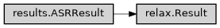

Result
- class ase2sprkkr.asr.relax.Result(a, c, atoms, images, alpha, symbols, spos, edft, b, gamma, beta, etot)[source]
Result class for
asr.relax.main().Class hierarchy
Constructor
- Parameters
a (float) –
c (float) –
atoms (Atoms) –
images (List[Atoms]) –
alpha (float) –
symbols (List[str]) –
spos (ndarray) –
edft (float) –
b (float) –
gamma (float) –
beta (float) –
etot (float) –
- __init__(a, c, atoms, images, alpha, symbols, spos, edft, b, gamma, beta, etot)
Instantiate result.
- Parameters
data (Dict[str, Any]) – Input data to be wrapped.
metadata (dict) – Dictionary containing metadata.
strict (bool or None) – Strictly enforce data entries in data.
- version: int = 0
- property atoms: Atoms
Relaxed atomic structure.
- property images: List[Atoms]
Path taken when relaxing structure.
- property etot: float
Total energy [eV]
- property edft: float
DFT total energy [eV]
- property a: float
Cell parameter a [Ang]
- property b: float
Cell parameter b [Ang]
- property c: float
Cell parameter c [Ang]
- property alpha: float
Cell parameter alpha [deg]
- property beta: float
Cell parameter beta [deg]
- property gamma: float
Cell parameter gamma [deg]
- key_descriptions: Dict[str, str] = {'a': 'Cell parameter a [Ang]', 'alpha': 'Cell parameter alpha [deg]', 'atoms': 'Relaxed atomic structure.', 'b': 'Cell parameter b [Ang]', 'beta': 'Cell parameter beta [deg]', 'c': 'Cell parameter c [Ang]', 'edft': 'DFT total energy [eV]', 'etot': 'Total energy [eV]', 'gamma': 'Cell parameter gamma [deg]', 'images': 'Path taken when relaxing structure.', 'spos': 'Array: Scaled positions', 'symbols': 'Array: Chemical symbols'}
- _known_data_keys = {'a', 'alpha', 'atoms', 'b', 'beta', 'c', 'edft', 'etot', 'gamma', 'images', 'spos', 'symbols'}
- strict = True